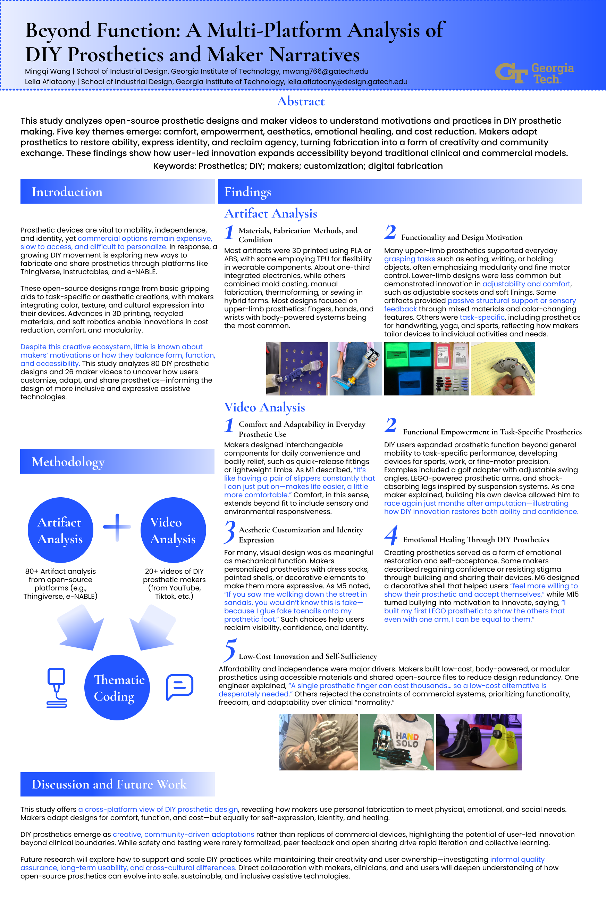

2025 | Research Work
Authors: Mingqi Wang and Leila Aflatoony
ASSETS 2025 Conference Poster
Prosthetics, DIY, Makers, Customization, Digital Fabrication, Accessibility
Qualitative Research, Thematic Analysis
